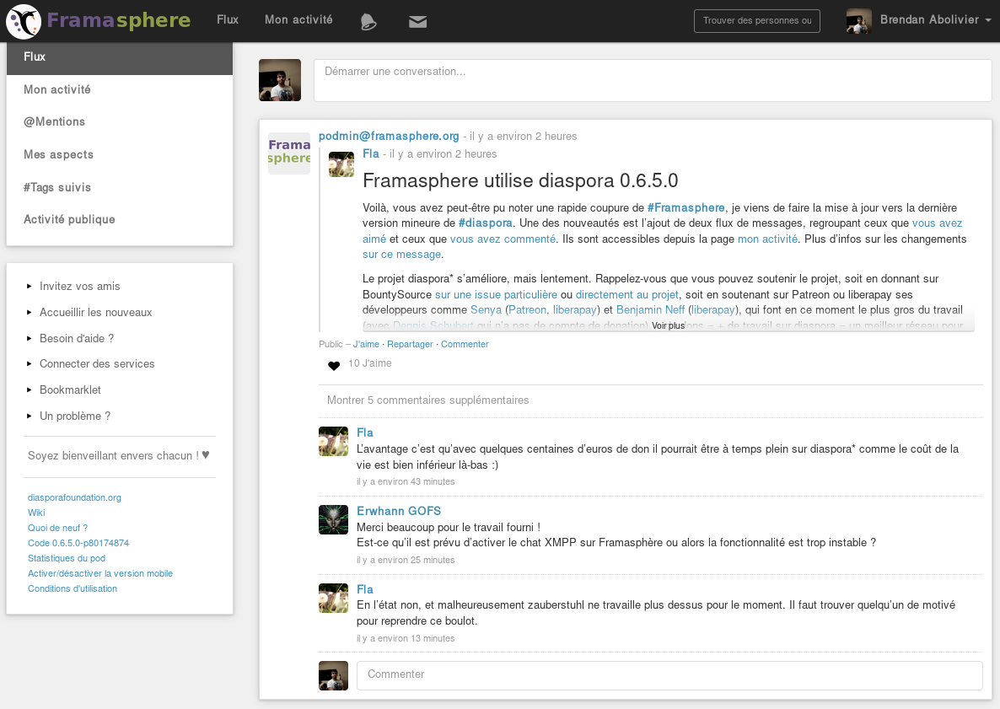
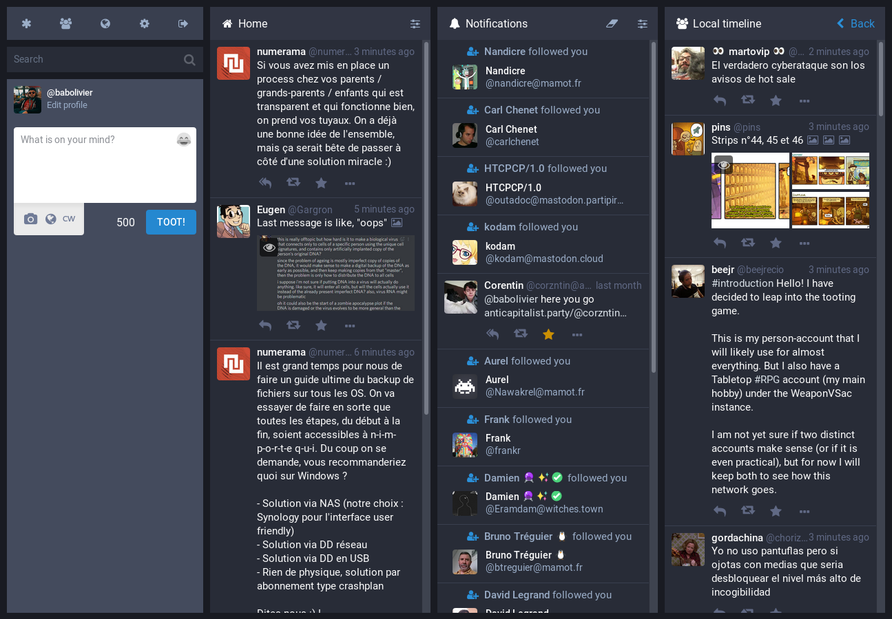
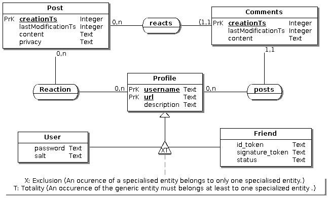
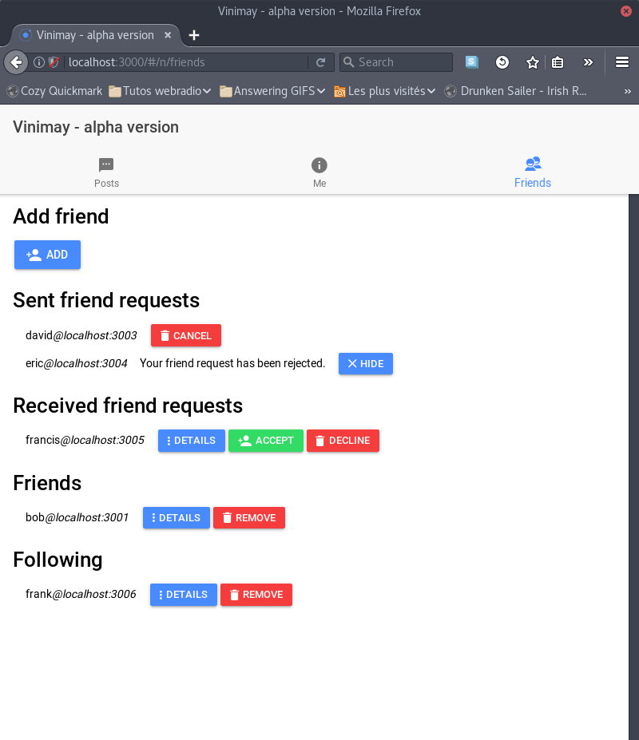

Vinimay
Réseau social décentralisé
Preuve de concept
- Repenser la propriété des données
- Décentralisé
Décentralisé
Quand un seul serveur ne suffit plus
Plateforme centralisée
Qu'est-ce que ça vaut ?
- Avantages :
- Toutes les données en un seul endroit
- Accès simplifié à la plateforme
- Inconvénients :
- Point d'attaque unique
- Production des données ⇏ propriété des données
Plateforme décentralisée
Qu'est-ce que ça vaut ?
- Avantages :
- Production des données ⇒ propriété des données
- Attaquer tout le réseau ≈ impossible
- Inconvénients :
- Difficile à appréhender
- Compétences techniques
Solutions existantes


Diaspora* à gauche, Mastodon à droite
Inconvénients
- Difficilement installables
- Pas d'intégration de réseaux tiers
- Pas toujours d'API publique
Vinimay
Du mot Hindi « विनिमय » (échange)
Décentralisé
Respectueux
Ouvert
Interopérable
Utilisable partout
Gestion de projet
Cahier des charges → découpage → priorisation → estimation → planning
Base de données

Client-Serveur
Technologies serveur

Node.js

TypeScript

Sequelize
Technologies client

Ionic 2
TypeScript
Technologies transverses

Git

Travis
Posts
Interactions
Amis

Sécurité
- jeton d'identification
- jeton de signature
Signature
// Crée une signature en utilisant SHA256
computeSignature(method, url, parameters, token);
=> 'a1c4517a514671c9930256c4120e47a289fd97b0d92288d952da4af905acd1dd'
Difficultés recontrées
- Docs pas à jour
- Utilisation de nouveaux outils
- Conception
Conclusion
Maintenant
- Preuve de concept fonctionnelle
- Fonctionnalités sociales minimales
- Maintenable
Et après ?
- Authentification
- Gestion du contenu lors de la suppression d'un ami
- Partage d'un post
- Intégration de réseaux tiers
- Annuaires
- Contenu enrichi
- ...
Décentralisé
- Domaine de recherche riche
- Beaucoup à faire
Remerciements
M. Le Ru
M. Mulot
L'ISEN
Merci de votre attention
Avez-vous des questions ?